Last Updated: 2020-10-01
Apache Derby is a RDBMS which is implemented in Java. It is an open source database developed by Apache Software Foundation.
Derby provides an embedded database engine which can be embedded in to any Java application. Once deployed, it runs in the same JVM as the application. Simply loading the driver starts the database and it stops with the applications.
From a MuleSoft standpoint, there are multiple applications of leveraging Derby in a project from maintaining state to encapsulating data along with an API implementation. This codelab will walk you through the process of setting of Derby in a new Mule project in Anypoint Studio.
Start Anypoint Studio and create a new Mule project by clicking on File > New Mule project.
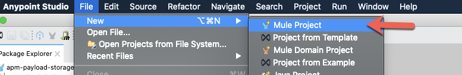
Give the project a name e.g. derbydb-mule4 and click on Finish
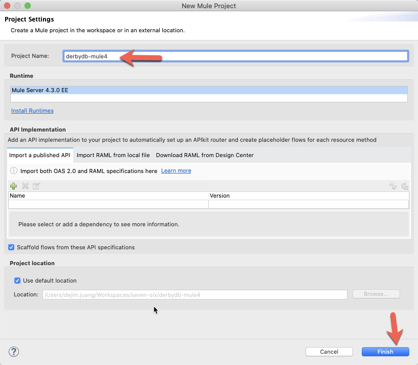
In the Mule Palette, click on Add Module and drag-and-drop in the Database and Spring modules to add them to the project. Your palette should look like this.
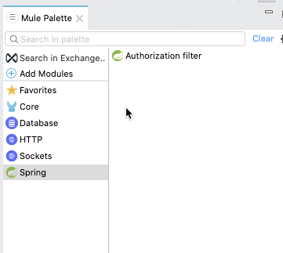
Drag and drop the following components into the Mule Canvas
so it matches the following screenshot. Don't worry about the red error markers, we'll go back and configure each component in the following sections.
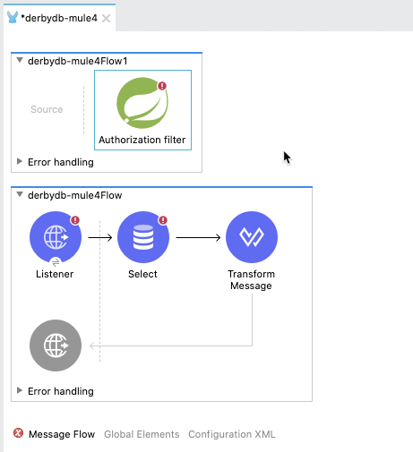
Then right-click on the flow with the Authorization filter component and click on Delete
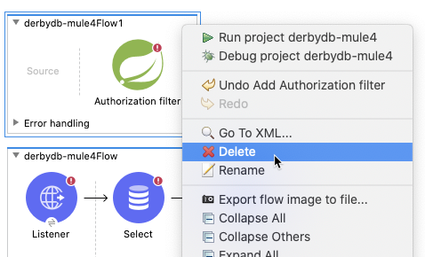
In the next sections, we're going to create the database scripts to build the tables and also configure the Spring components that will setup the Derby database.
In this section, we'll be creating the scripts for setting up the database and tables as well the Spring bean configuration file used by the Spring module.
In the Package Explorer, expand the src/main/resources folder. Right click on the folder and select New > File
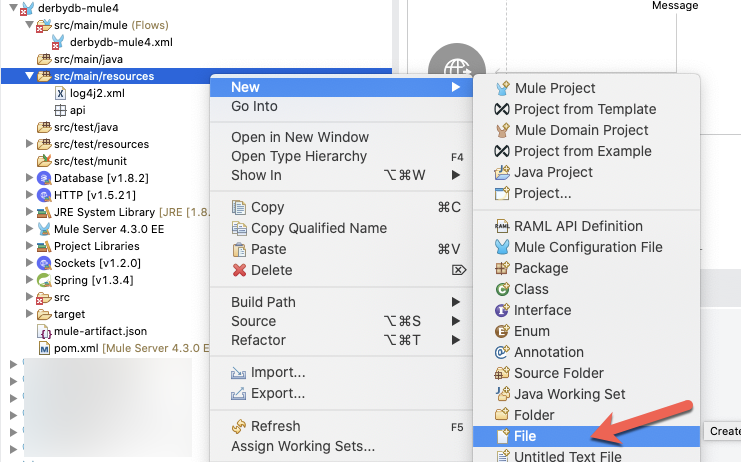
Name the file springbeans.xml and click on Finish
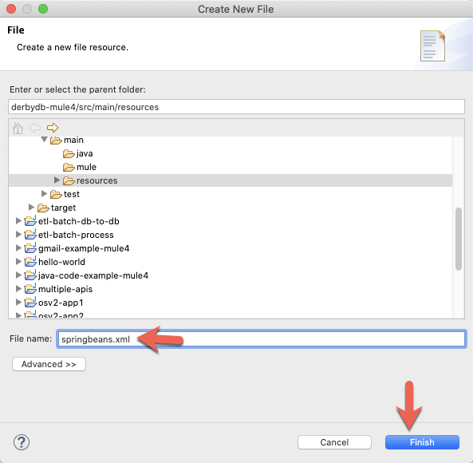
Paste the following XML into the file:
<beans xmlns="http://www.springframework.org/schema/beans"
xmlns:context="http://www.springframework.org/schema/context"
xmlns:xsi="http://www.w3.org/2001/XMLSchema-instance"
xmlns:jdbc="http://www.springframework.org/schema/jdbc"
xsi:schemaLocation="http://www.springframework.org/schema/beans
http://www.springframework.org/schema/beans/spring-beans-4.2.xsd
http://www.springframework.org/schema/jdbc
http://www.springframework.org/schema/jdbc/spring-jdbc-4.2.xsd
http://www.springframework.org/schema/context
http://www.springframework.org/schema/context/spring-context-4.2.xsd
http://www.springframework.org/schema/security
http://www.springframework.org/schema/security/spring-security-4.2.xsd">
<bean class="org.apache.commons.dbcp2.BasicDataSource" destroy-method="close" id="dataSource">
<property name="driverClassName" value="org.apache.derby.jdbc.EmbeddedDriver" />
<property name="url" value="jdbc:derby:memory:demodb;create=true" />
<property name="initialSize" value="5" />
</bean>
<jdbc:initialize-database data-source="dataSource">
<jdbc:script execution="INIT" location="classpath:create-db.sql" />
<jdbc:script execution="INIT" location="classpath:insert-data.sql" />
</jdbc:initialize-database>
</beans>It should look like the screenshot below. This is used by the Spring module to initialize and configure the Derby database. You can see that it calls two SQL files in line 22 and 23 to create the database, tables and insert data into those tables. We'll create the SQL files next.
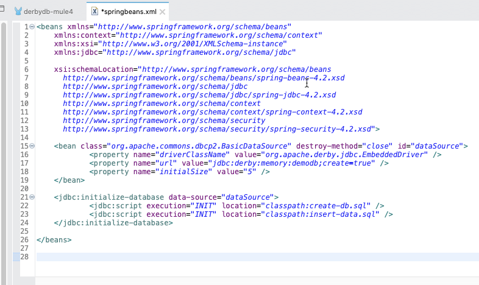
Right click on the folder src/main/resources again and click on New > File and name the file create-db.sql and click on Finish.
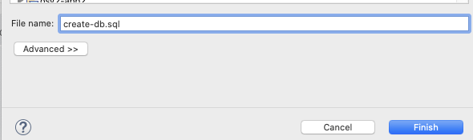
Copy and paste the following script into the file and save it. This will create a new schema and a new table in the Derby database.
CREATE SCHEMA demodb;
CREATE TABLE demodb.customers (id INTEGER NOT NULL GENERATED ALWAYS AS IDENTITY (START WITH 5, INCREMENT BY 1),
customerId INTEGER,
companyName varchar(50),
lastName varchar(50),
firstName varchar(50),
phone varchar(50),
addressLine1 varchar(50),
addressLine2 varchar(50),
city varchar(50),
state varchar(50),
postalCode varchar(15),
country varchar(50),
productNumber INTEGER,
creditLimit decimal(10,2),
CONSTRAINT customer_primary_key PRIMARY KEY (id));Repeat the previous steps to create another new file called insert-data.sql
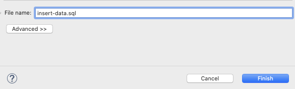
Copy and paste the following script into the file and save it. This will populate the table that we just created.
DELETE from demodb.customers;
INSERT INTO demodb.customers (customerId, companyName,lastName,firstName,phone,addressLine1,addressLine2,city,state,postalCode,country,productNumber,creditLimit)
VALUES
(103,'Atelier graphique','Schmitt','Carine ','40.32.2555','54, rue Royale',NULL,'Nantes',NULL,'44000','France',1370,21000.00)
,(112,'Signal Gift Stores','King','Jean','7025551838','8489 Strong St.',NULL,'Las Vegas','NV','83030','USA',1166,71800.00)
,(114,'Australian Collectors, Co.','Ferguson','Peter','03 9520 4555','636 St Kilda Road','Level 3','Melbourne','Victoria','3004','Australia',1611,117300.00)
,(119,'La Rochelle Gifts','Labrune','Janine ','40.67.8555','67, rue des Cinquante Otages',NULL,'Nantes',NULL,'44000','France',1370,118200.00)
,(121,'Baane Mini Imports','Bergulfsen','Jonas ','07-98 9555','Erling Skakkes gate 78',NULL,'Stavern',NULL,'4110','Norway',1504,81700.00)
,(124,'Mini Gifts Distributors Ltd.','Nelson','Susan','4155551450','4427 Holt St.',NULL,'Houston','TX','77401','USA',1165,210500.00)
,(125,'Havel & Zbyszek Co','Piestrzeniewicz','Zbyszek ','(26) 642-7555','ul. Filtrowa 68',NULL,'Warszawa',NULL,'01-012','Poland',NULL,0.00)
,(128,'Blauer See Auto, Co.','Keitel','Roland','+49 69 66 90 2555','Lyonerstr. 34',NULL,'Frankfurt',NULL,'60528','Germany',1504,59700.00)
,(129,'Mini Wheels Co.','Murphy','Julie','6505555787','415 Mission Street.',NULL,'San Francisco','CA','94217','USA',1165,64600.00)
,(131,'Land of Toys Inc.','Lee','Kwai','2125557818','897 Long Airport Avenue',NULL,'NYC','NY','10022','USA',1323,114900.00);Go back to the Mule Canvas, click the Listener icon, and click on the green plus sign to create a new Connector configuration.
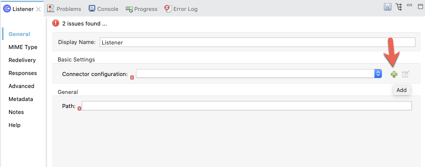
Under the General tab, and in the Connection section, take note of the port. By default this will be 8081. Go ahead and click on OK to accept the defaults and proceed.
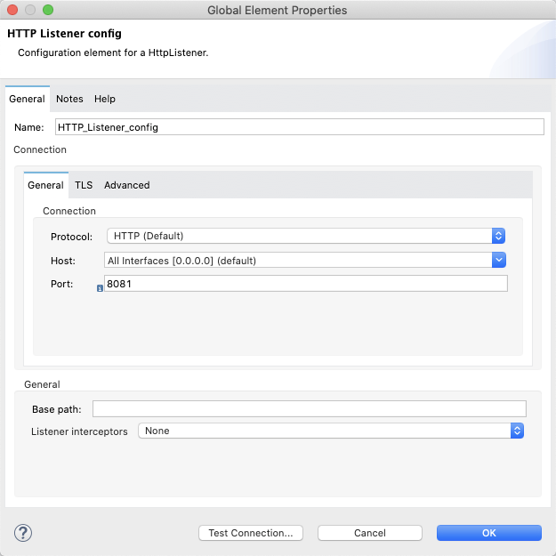
Back in the Listener Mule properties tab, fill in the Path field with the value /customers.
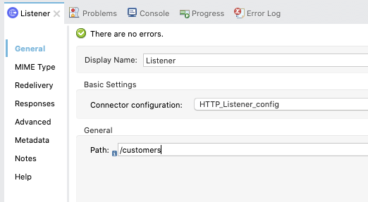
Click on Global Elements in the Mule Canvas.
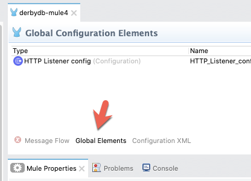
Click on Create
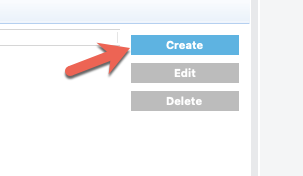
In the Filter box, search for spring. Click on Spring Config and click on OK.
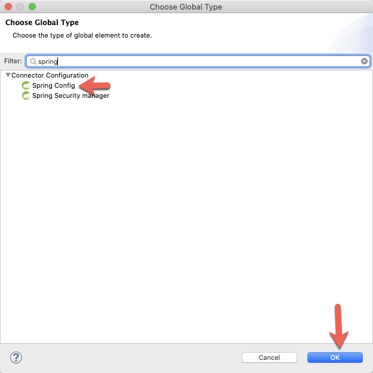
In the Spring Config window, fill in the Files field with springbeans.xml and click on OK.
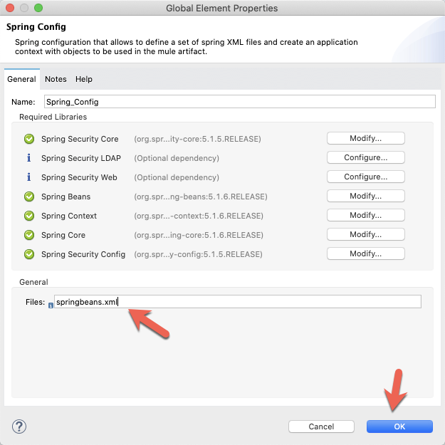
Switch back to the Message Flow on the Mule Canvas and click on the Select operation.
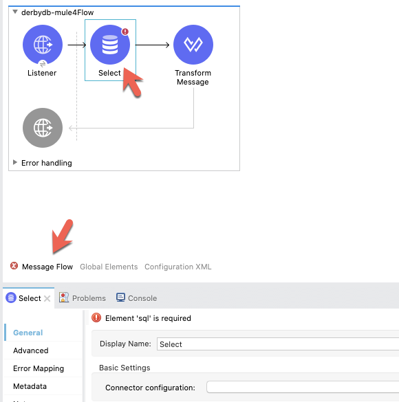
Click on the green plus sign in the Basic Settings section next to Connector configuration
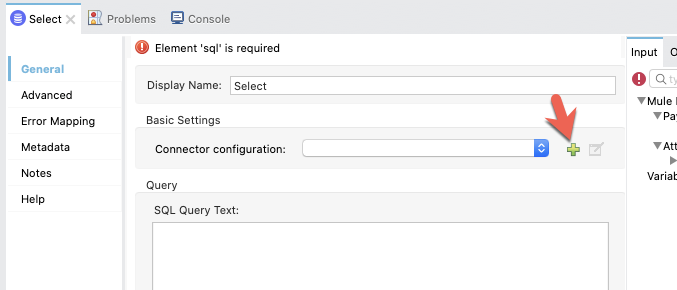
In the Database Config window, change the Connection to Generic Connection
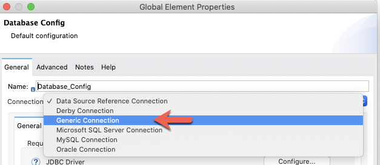
Copy and paste the following values into the corresponding fields under the General > Connection section and click on OK
URL |
|
Driver class name |
|
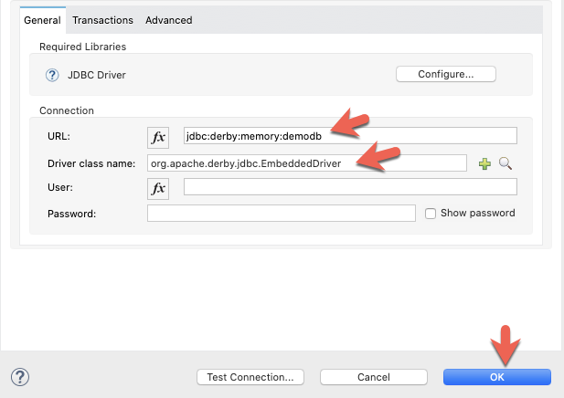
Back in the Mule Properties, paste the following SQL script into the SQL Query Text field.
select * from demodb.customers 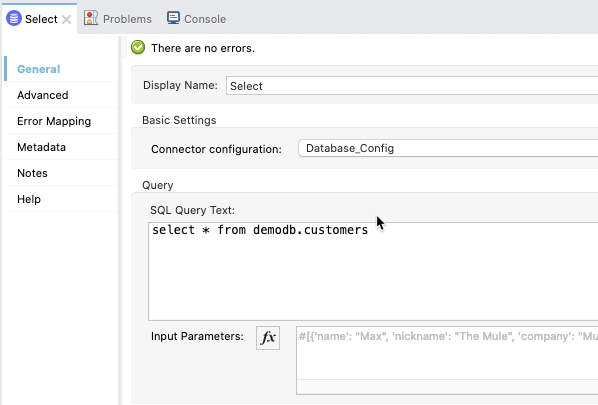
In the Mule Canvas, click on the Transform Message component to open the Mule Properties tab.
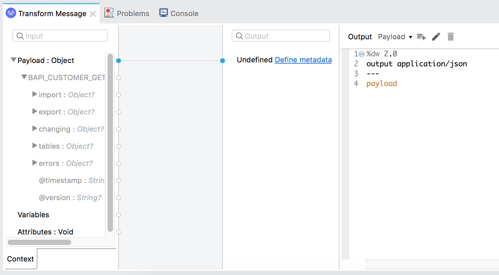
Modify the DataWeave script and paste the following:
%dw 2.0
output application/json
---
payloadThis will take the data received from the database and return the data in JSON format back to the browser.
The last thing we need to configure before running the application are the Maven dependencies needed for the project to run successfully. In the Package Explorer, open the pom.xml file.
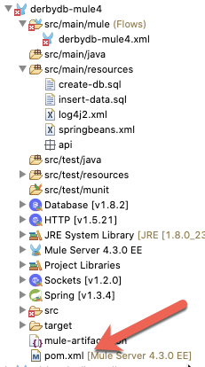
Scroll down and find the sharedLibraries section and paste in the following XML
<sharedLibrary>
<groupId>org.apache.derby</groupId>
<artifactId>derby</artifactId>
</sharedLibrary>
<sharedLibrary>
<groupId>org.apache.commons</groupId>
<artifactId>commons-dbcp2</artifactId>
</sharedLibrary>
<sharedLibrary>
<groupId>org.springframework</groupId>
<artifactId>spring-jdbc</artifactId>
</sharedLibrary>It should look like the following screenshot.
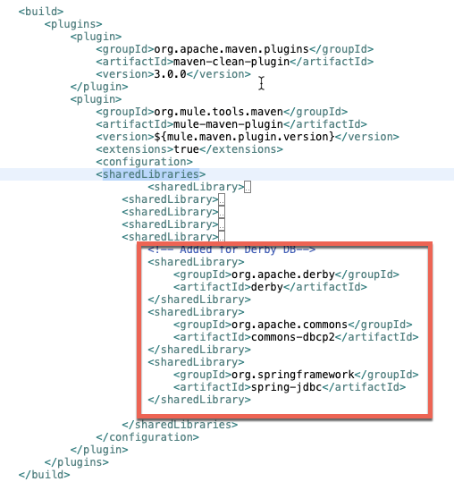
Then find the dependencies section and paste the following XML
<dependency>
<groupId>org.apache.derby</groupId>
<artifactId>derby</artifactId>
<version>10.14.2.0</version>
</dependency>
<dependency>
<groupId>org.apache.commons</groupId>
<artifactId>commons-dbcp2</artifactId>
<version>2.5.0</version>
</dependency>
<dependency>
<groupId>org.springframework</groupId>
<artifactId>spring-jdbc</artifactId>
<version>5.1.0.RELEASE</version>
</dependency>Here's a screenshot showing how it should look.
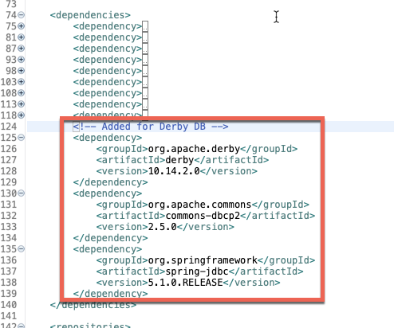
Now that everything has been configured, let's run the project and see the Derby Database in action. Right-click on the canvas and click on Run project
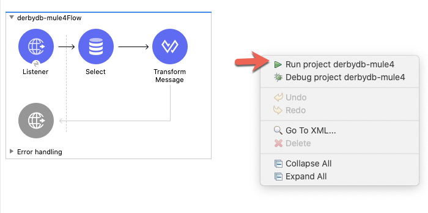
When the project is successful deployed, switch to your browser and navigate to the following URL
http://localhost:8081/customersIf everything was configured successfully, you'll see the following response in your window.
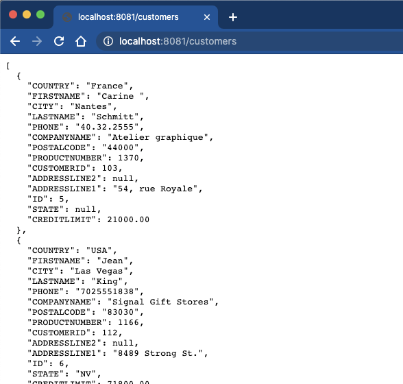
In this codelab, you learned how to setup a Derby Database in your Mule application. While this only shows a SELECT statement, you can run any standard database operation against the Derby Database.
Additionally the SQL scripts can be modified as-needed. You can pre-populate the database with any data needed for the Mule application to run as an isolated container.
One important thing to keep in mind is that once the application is stopped, the database and tables are dropped losing any changes that occurred while deployed.
Check out some of these codelabs...